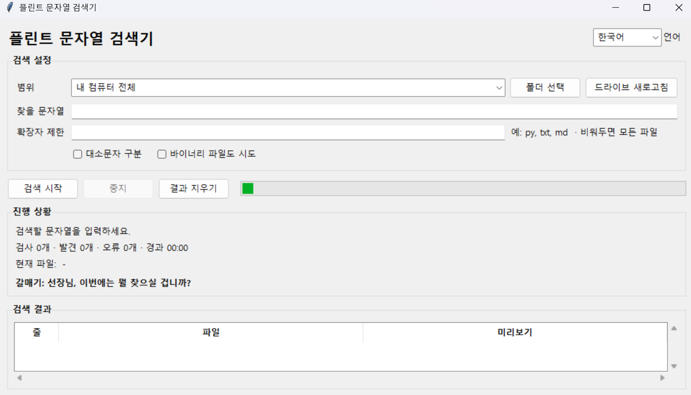
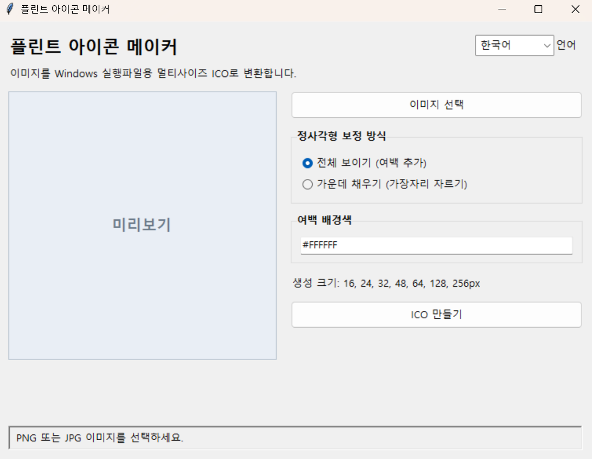

플린트의 공구함
항해를 하며 플린트가 하나씩 채워 온 도구함입니다.


플린트 아이콘 메이
PNG, JPG, WEBP, BMP 이미지를 Windows 실행파일용 멀티사이즈 ICO 파일로 변환하는 GUI 도구입니다.
버전: 1.0.0
설명 및 설치 방법항해를 하며 플린트가 하나씩 채워 온 도구함입니다.


PNG, JPG, WEBP, BMP 이미지를 Windows 실행파일용 멀티사이즈 ICO 파일로 변환하는 GUI 도구입니다.
버전: 1.0.0
설명 및 설치 방법